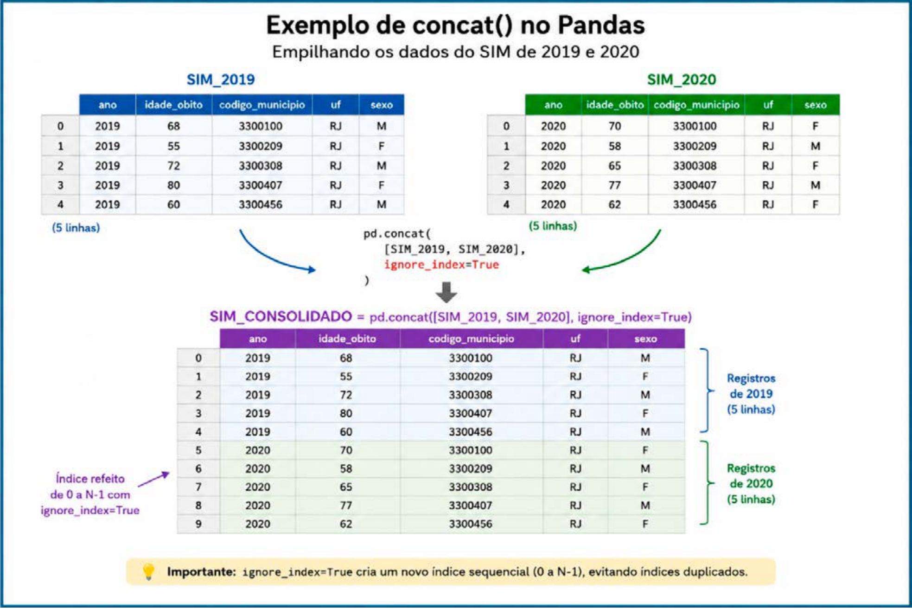
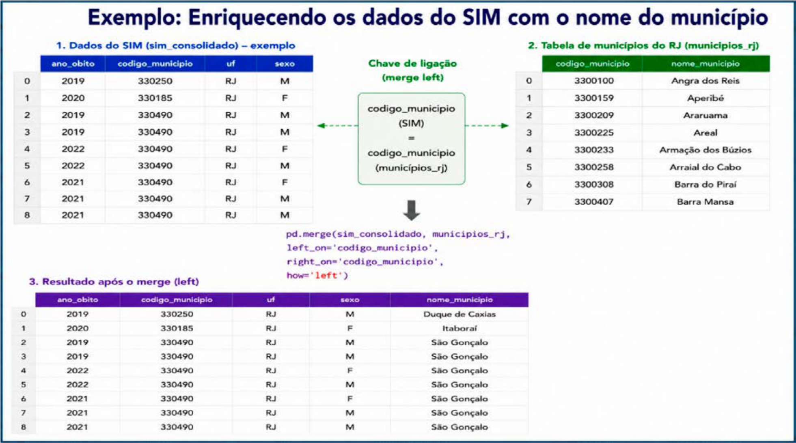

Módulo 2 | Aula 2
Introdução à Análise de Dados com Pandas
Integrando dados com concat() e merge()
Em análises de saúde pública, frequentemente precisamos trabalhar com mais de uma tabela. Podemos, por exemplo, reunir os dados do SIM de diferentes anos em uma única base ou relacionar os registros de óbitos com informações de população do IBGE.
O Pandas oferece duas funções importantes para essas situações: pd.concat() e pd.merge(). Embora ambas sejam usadas para combinar DataFrames, elas realizam operações diferentes: concat() é utilizado principalmente para empilhar tabelas, enquanto merge() permite relacionar tabelas a partir de uma ou mais colunas em comum.
Empilhando tabelas com pd.concat()
Imagine que temos duas tabelas do SIM: uma com os óbitos de 2019 e outra com os óbitos de 2020. Se as duas possuem a mesma estrutura, podemos empilhar os registros de uma tabela abaixo dos registros da outra, formando uma única base com os dois anos. É exatamente esse tipo de operação que a função pd.concat() realiza.

Nesse exemplo, os registros são empilhados de sim_2019 até o sim_2022. As colunas são alinhadas pelo nome. Assim, se ambas as tabelas possuem as mesmas colunas, os valores de cada coluna permanecem organizados corretamente.
# Empilhando as bases anuais do SIM
sim_consolidado = pd.concat(
[sim_2019, sim_2020, sim_2021, sim_2022,],
ignore_index=True
)Se as bases não possuírem linhas duplicadas e não houve filtragem durante a operação, o número de linhas da base consolidada será igual à soma do número de linhas das bases.
Cada DataFrame possui um índice utilizado para identificar suas linhas. Como diferentes DataFrames podem ter índices iguais, ao empilhá-los esses índices podem se repetir. O argumento ignore_index=True ignora os índices originais e cria um novo índice sequencial, de 0 até o número total de registros menos 1.
Relacionando tabelas com pd.merge()
Agora considere uma situação diferente. Temos o código do município no DataFrame com os óbitos. Mas para os relatórios que queremos criar, precisaremos do nome do município. Repare que nesse caso não queremos simplesmente colocar uma tabela abaixo da outra. Queremos adicionar novas informações aos nossos dados. Para isso, utilizaremos o método pd.merge() do Pandas e um novo conjunto de dados (municipios_rj) com duas colunas: codigo_municipio e nome_municipio.
O método merge() realiza uma operação semelhante a um JOIN em bancos de dados SQL e estabelece a correspondência por meio de uma coluna-chave que esteja presente nas duas tabelas, como codigo_municipio. A imagem a seguir ilustra esse processo.

Nesse exemplo, on="codigo_municipio" informa ao Pandas qual coluna deve ser utilizada para encontrar a correspondência entre as duas tabelas. Já how="left" determina que todos os registros do sim_consolidado serão mantidos, mesmo que algum código de município não seja encontrado na tabela municipios_rj.
# Acrescentar o nome do município aos dados do SIM (sim_consolidado)
sim_consolidado = pd.merge(
sim_consolidado, municipios_rj,
on="codigo_municipio", how="left"
)Após a execução do código, o DataFrame sim_consolidado passa a conter, além das informações originais dos registros de óbitos, o nome_municipio correspondente a cada codigo_municipio. Dessa forma, o merge() permite enriquecer uma base de dados com informações provenientes de outra fonte.
Relacionando óbitos e população por município
Depois de aprender a utilizar merge() para acrescentar informações a registros individuais, podemos aplicá-lo a uma situação muito comum em análises de saúde pública: relacionar informações agregadas de uma base de óbitos com dados populacionais. Nesse caso, queremos primeiro saber quantos óbitos foram registrados em cada município e, depois, acrescentar a população correspondente. Essa combinação é importante porque o número absoluto de óbitos, isoladamente, não permite comparar adequadamente municípios de diferentes tamanhos populacionais. Ao relacionar os óbitos à população, criamos a estrutura necessária para posteriormente calcular taxas e outros indicadores de mortalidade.
Para começar, agrupamos os registros do SIM por ano, município e nome do município e contamos quantos óbitos existem em cada grupo:
# Total de óbitos por município e ano
obitos_muni = (
sim_consolidado
.groupby(["ano_obito","codigo_municipio","nome_municipio"])
.size()
.reset_index(name="total_obitos")
)O groupby() reúne os registros que possuem a mesma combinação de ano, código do município e nome do município. Em seguida, o método size() conta quantos registros existem em cada grupo. Por fim, reset_index(name="total_obitos") transforma o resultado novamente em um DataFrame e dá o nome total_obitos à coluna com as contagens.
O resultado é uma tabela em que cada linha representa um município em determinado ano, acompanhada do número de óbitos registrados:
| ano_obito | codigo_municipio | nome_municipio | total_obitos | |
|---|---|---|---|---|
| 68 | 2022 | 330270 | Maricá | 1158 |
| 20 | 2020 | 330045 | Belford Roxo | 2922 |
| 3 | 2019 | 330190 | Itaboraí | 1273 |
Legenda: Número total de óbitos agregados por ano_obito, codigo_municipio e nome_municipio. Fonte: Elaborada pelo autor
Agora podemos relacionar essa tabela com populacao_rj, que contém estimativas populacionais e, para 2022, o dado censitário disponível. Nesse caso, precisamos utilizar duas informações para encontrar a população correta: o código do município e o ano. Um município aparece várias vezes na tabela de população, uma vez para cada ano. Portanto, não basta encontrar o município; precisamos também garantir que a população seja referente ao mesmo ano dos óbitos.
Além disso, as colunas que representam o ano possuem nomes diferentes nas duas tabelas: ano_obito no DataFrame de óbitos e ano no de população. Por isso, utilizamos left_on e right_on para indicar quais colunas correspondem entre as duas tabelas:
# Relacionando os óbitos por município e ano com a população
obitos_muni_ano = pd.merge(
obitos_muni,
populacao_rj,
left_on=["codigo_municipio", "ano_obito"],
right_on=["codigo_municipio", "ano"],
how="left"
)Nesse código, left_on indica as colunas que serão utilizadas como chave no DataFrame obitos_muni, enquanto right_on indica as colunas correspondentes no DataFrame populacao_rj. Assim, o Pandas procura uma correspondência em que o código do município e o ano coincidam.
| ano_obito | codigo_municipio | nome_municipio | total_obitos | ano | estimativa_populacao | tipo_dado | |
|---|---|---|---|---|---|---|---|
| 67 | 2022 | 330260 | Mangaratiba | 246 | 2022 | 41220 | censo_2022 |
| 36 | 2020 | 330490 | São Gonçalo | 6969 | 2020 | 1091737 | estimativa |
| 34 | 2020 | 330414 | Queimados | 923 | 2020 | 151335 | estimativa |
Legenda: DataFrame sim_com_populacao. Fonte: Elaborada pelo autor
O número de óbitos é uma medida absoluta e pode ser maior simplesmente porque um município possui uma população maior. Ao combinar o número de óbitos com a população, podemos avançar para medidas relativas, como taxas ou coeficientes de mortalidade, permitindo comparações mais adequadas entre diferentes municípios.
Construindo o indicador: taxa de mortalidade por 100 mil habitantes
Depois de relacionarmos o número de óbitos com a população de cada município, podemos calcular a taxa de mortalidade, um indicador que permite comparar municípios de diferentes tamanhos populacionais. A ideia é simples: dividimos o número de óbitos pela população do município e multiplicamos o resultado por 100.000. Esse fator de multiplicação permite expressar o indicador como número de óbitos para cada 100 mil habitantes.
# Calculando a taxa de mortalidade por 100 mil habitantes
obitos_muni_ano["taxa_mortalidade"] = (
obitos_muni_ano["total_obitos"] /
obitos_muni_ano["estimativa_populacao"] *
100000
)O resultado é armazenado em uma nova coluna chamada taxa_mortalidade. Como o cálculo é realizado diretamente sobre as colunas do DataFrame, o Pandas aplica a operação linha a linha, sem a necessidade de utilizar um for para percorrer os municípios. Por exemplo, se um município possui 500 óbitos e uma população de 250.000 habitantes:
(500 / 250.000) × 100.000 = 200Isso significa uma taxa bruta de 200 óbitos para cada 100 mil habitantes. Depois de calcular a taxa, podemos ordenar os municípios do maior para o menor valor e visualizar os cinco primeiros:
| nome_municipio | ano_obito | total_obitos | estimativa_populacao | taxa_mortalidade | |
|---|---|---|---|---|---|
| 51 | Niterói | 2021 | 4967 | 516981 | 960.770318 |
| 48 | Maricá | 2021 | 1604 | 167668 | 956.652432 |
| 31 | Niterói | 2020 | 4570 | 515317 | 886.832765 |
| 47 | Mangaratiba | 2021 | 405 | 45941 | 881.565486 |
| 50 | Nilópolis | 2021 | 1377 | 162893 | 845.340193 |
Legenda: Taxa bruta de mortalidade. Fonte: Elaborada pelo autor
O método sort_values() organiza as linhas de acordo com uma coluna. Nesse caso, usamos taxa_mortalidade e ascending=False para colocar os maiores valores primeiro.
# Ordenando pela taxa de mortalidade, da maior para a menor
top5_mortalidade = (
obitos_muni_ano
.sort_values("taxa_mortalidade", ascending=False)
.head(5)
)
top5_mortalidadeOs dados utilizados neste exercício são recortes preparados para fins didáticos, e as informações populacionais são estimativas. Portanto, os resultados obtidos não devem ser utilizados como resultados oficiais ou para tomada de decisão fora do contexto deste exercício. Além disso, uma taxa de mortalidade maior não significa necessariamente que um município tenha o maior número absoluto de óbitos. Municípios com populações menores podem apresentar taxas elevadas mesmo com um número relativamente pequeno de óbitos. Por isso, a interpretação do indicador deve considerar tanto o tamanho da população quanto o número de eventos observados.